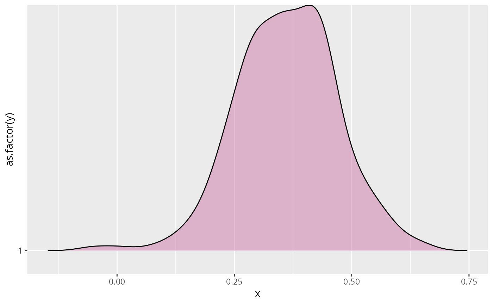

Plot roll_your_own Objects
Usage
# S3 method for class 'roll_your_own'
plot(x, fill = "#CC79A7", alpha = 0.5, ...)Examples
# \donttest{
####################################
###### example 1: assortment #######
####################################
# assortment
library(assortnet)
Y <- BGGM::bfi[,1:10]
membership <- c(rep("a", 5), rep("c", 5))
# fit model
fit <- estimate(Y = Y, iter = 250,
progress = FALSE)
# membership
membership <- c(rep("a", 5), rep("c", 5))
# define function
f <- function(x,...){
assortment.discrete(x, ...)$r
}
net_stat <- roll_your_own(object = fit,
FUN = f,
types = membership,
weighted = TRUE,
SE = FALSE, M = 1,
progress = FALSE)
# plot
plot(net_stat)
#> Picking joint bandwidth of 0.0294

# }